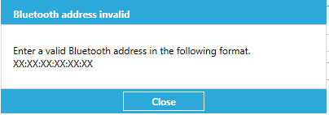

Overview
The Scan-To-Connect (STC) Utility enables user to print barcodes from the utility itself, using Zebra printers.
Zebra Printer
Requirement
- Scan-To-Connect Utility for Windows v4.02.0006 or higher.
- Zebra printer driver installed. (Driver should match with the printer using).
- Connected Zebra barcode printer.
- Bluetooth availability in the host device (Installed PC/Laptop).
Steps
-
Open Scan-To-Connect Application. App will open with the startup screen. If you can see
 icon in the bottom right corner like following photo, please skip step 2. If you cannot see the printer icon, please follow step 2 to enable printer icon.
icon in the bottom right corner like following photo, please skip step 2. If you cannot see the printer icon, please follow step 2 to enable printer icon. Figure 1: Scan-To-Connect Utility for Windows Home Screen
Figure 1: Scan-To-Connect Utility for Windows Home Screen
-
Click
 top right corner and you will get the setting window like below.Figure 2: Scan-To-Connect Utility for Windows App Settings Screen
top right corner and you will get the setting window like below.Figure 2: Scan-To-Connect Utility for Windows App Settings Screen
-
Toggle the button related Show Print Button on App Screen setting. And it will change blue color to indicate the option turned on.
Figure 3: Enable Printer Button
Click Back arrow
 top left corner to direct startup window of the Scan to Connect application. Now the printer icon should available like the step 01 screen.
top left corner to direct startup window of the Scan to Connect application. Now the printer icon should available like the step 01 screen. -
Click Print Icon in the Startup screen. From drop down select Zebra Printer.
Figure 4: Select Printer
-
In the following screen,
Figure 5: Zebra Printer Settings
-
Bluetooth Address – This represents the Bluetooth address that needs to print in the barcode. Default it takes the Bluetooth address of the inbuilt host’s or plugged adapter. To print an external Bluetooth address, place a tick in the Manually Enter Bluetooth Address. The given BT Address should match the XX:XX:XX:XX:XX:XX format. If the validation is failed, the following message will pop up when trying to print the barcode.
Figure 6: Invalid Bluetooth Address
- Zebra Printer – Installed Zebra Printer Drivers will list in the drop down. Select the matching driver with the connected printer.
- Zebra Template – Printing Layout can set to this field by browning the windows explorer. This file defines the layout for the fed paper (sticker) to the printer. (Padding, orientation etc.). To add a custom file, uncheck Use Default Template and click Browse Template button to select the customizes template file.
- Number of Copies – This will define how many copies need to print in a single trigger of print event. Range of copies is 1 to 99. (Printing can be triggered by clicking the print icon or attach the relevant printer).
- Auto Print When New Dongle is Connected – If this option is turned on, whenever a new BT dongle connected, or inbuilt BT turned on from off, it will automatically print a Scan to Connect barcode by triggering print state if the printer is connected.
- Print Button - Clicking this icon will print barcodes according to the above-mentioned configurations. (As an example: if typed 4 copies, single print click will print four times.)
-
Other Printers
Requirement
- Scan-To-Connect Utility for Windows v4.02.0006 or higher.
- A printer with the driver installed.
- Connected Zebra barcode printer.
- Bluetooth availability in the host device (Installed PC/Laptop).
Steps
-
Open Scan-To-Connect Application. App will open with the startup screen. If you can see
icon in the bottom right corner like following photo, please skip step 2. If you cannot see the printer icon, please follow step 2 to enable printer icon.Figure 7: Scan-To-Connect Utility for Windows Home Screen
-
Click
top right corner and you will get the setting window like below.Figure 8: Scan-To-Connect Utility for Windows App Settings Screen
-
Toggle the button related Show Print Button on App Screen setting. And it will change blue color to indicate the option turned on.
Figure 9: Enable Printer Button
Click Back arrow
top left corner to direct startup window of the Scan to Connect application. Now the printer icon should available like the step 01 screen. -
Click Print Icon in the Startup screen. From drop down select Zebra Printer.
Figure 10: Select Printer
-
Select the barcode size that need to print (This are predefined sizes and must select most suitable size for the requirement.)
Figure 11: Select Other Printers
-
After selecting the size, it will navigate to the printer setup window. This will be different to each of the printer that going to use with the installed driver. This will also allow PDF printers as well if any installed drivers.
Please note the following window will be coming from the printer driver and it will be not the same for you.
 Figure 12: Printer Settings
Figure 12: Printer Settings
Please make the setting as you required and click Print.
Troubleshooting
If anytime happen to face following screen, please check if the installed device has activated Bluetooth. If not turned On the BT or connect a dongle. Doing so automatically redirect to the start-up screen as in Step 01. No need to restart the application.